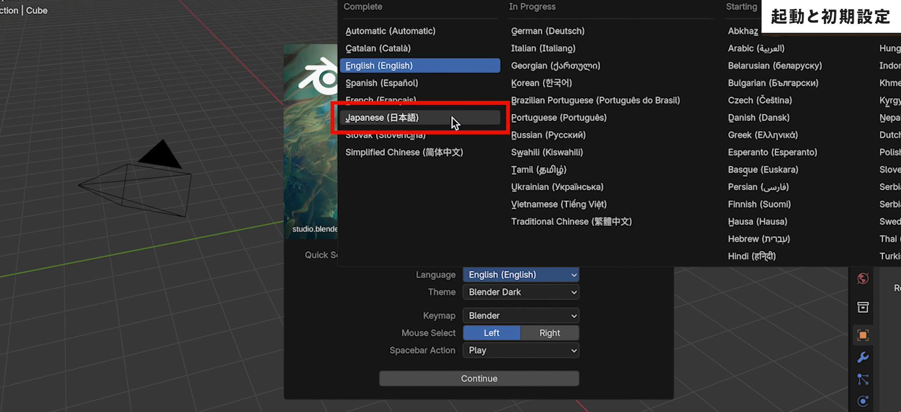
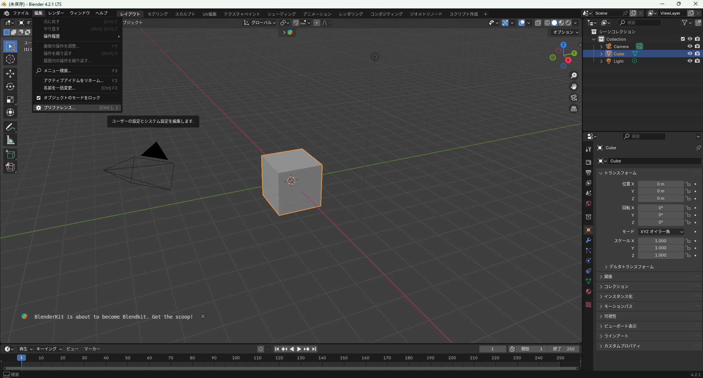
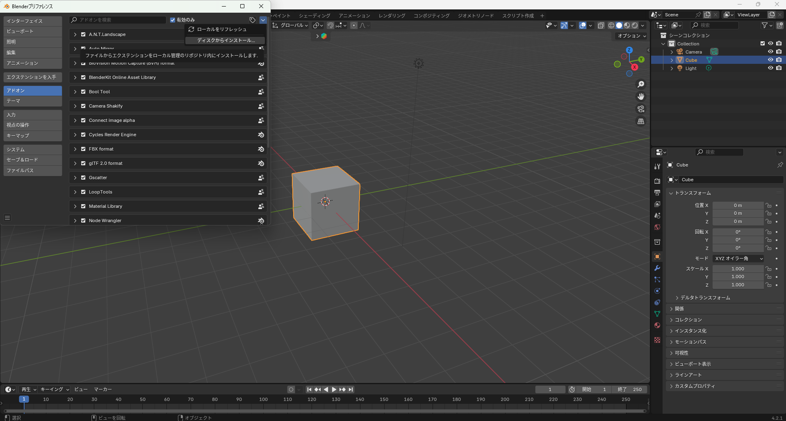
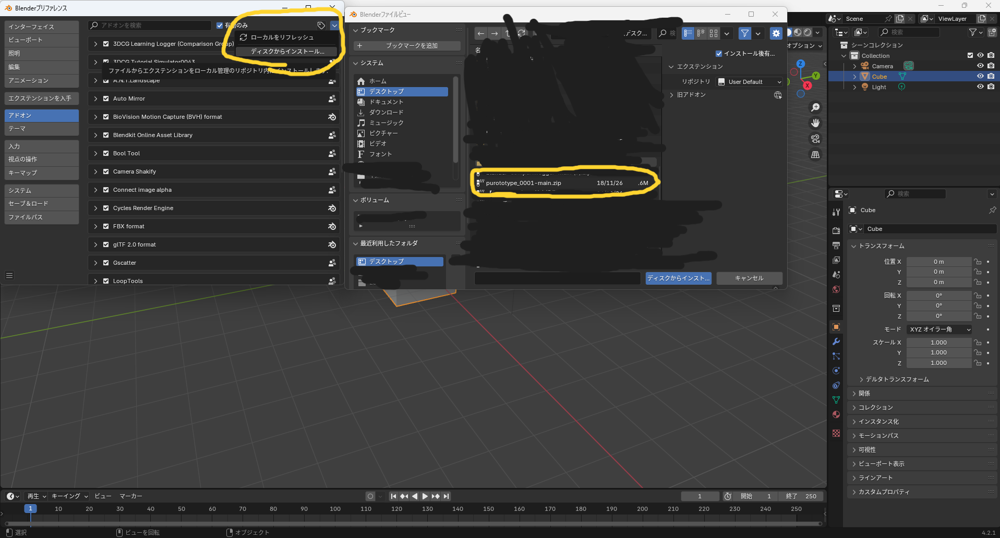

リンク集
比較実験にご協力いただく方へ
本研究では、このアドオンと既存の学習方法（動画教材）とで、
Blenderの操作習得のしやすさを比較する実験を行っています。
実施者から案内された方法（A・Bどちらか）で30分間学習し、そのあと全員が同じ確認テストを受けます。
学習時間は全員30分です（教材を最後まで終えられなくても、時間になったら打ち切ります）。
A. アドオン版
① 「導入手順」に沿ってアドオンをインストールし、チュートリアルで学習します。
② 学習後の確認テストのため、記録用アドオンも導入し、「群：アドオン版」で「テスト開始」を押します。
B. 動画版
① 記録用アドオンを導入し、「群：動画版」で「計測開始」を押してから、下の動画（1:33〜30:41の区間）を見ながら学習します。
② 学習が終わったら「計測終了」を押し、同じアドオンで「テスト開始」を押して確認テストを受けます。
当日の案内ページ（参加者用）
実験当日の進め方を、手順に沿って説明しています。
※確認テストはヒントなし・資料の持ち込みなしで行います。
※テストが終わったら、このページ上部（リンク集）の「アンケートに答える」から回答してください。
アンケート冒頭の「今回はどちらの方法で取り組みましたか」で、A（アドオン版）／B（動画版）を選択します。
導入手順
対応バージョン：Blender 4.2 以上（4.2 LTS で動作確認）
この手順は、チュートリアルアドオンの導入です。比較実験の確認テストに使う記録用アドオンは、
このあとの「記録用アドオンの導入」をご覧ください。

ZIPファイルをダウンロードする
ページ右側の緑色の「Code」ボタンをクリックし、 メニュー内の「Download ZIP」を選択してダウンロードしてください。

ZIPファイルをデスクトップに置く
ダウンロードしたZIPファイル（purototype_0001-main.zip）をデスクトップに移動してください。
⚠ このZIPファイルは解凍（展開）しないでください。

Blenderの言語を日本語に設定する
Blenderを起動したら、画面上部の「Edit（編集）」→「Preferences（プリファレンス）」を開き、 「Interface（インターフェース）」タブ内の 「Language（言語）」を「Japanese（日本語）」に変更してください。

プリファレンスを開く
画面上部の「編集」タブをクリックし、 メニュー内の「プリファレンス」を選択してください。

「ディスクからインストール」を開く
プリファレンスウィンドウ左側の「アドオン」を開き、 右上にある「∨（下向き矢印）」マークをクリックして 「ディスクからインストール」を選択してください。

ZIPファイルを選択してインストールする
ファイルブラウザが開いたら、以下の順に進んでください。
「デスクトップ」→「purototype_0001-main.zip」を選択
→ 右上の「ディスクからインストール」ボタンをクリック

アドオンパネルを開いて起動を確認する
プリファレンスウィンドウを閉じ、3Dビュー上で
「N キー」を押してサイドパネルを開いてください。
タブの中に「Tutorial」が表示されていれば、
インストール成功です。下の画像のように、第0章「基本知識」が表示されることを確認してください。

参加者IDに学籍番号を入力する
Tutorialパネル上部の「参加者ID」欄に、
自分の学籍番号を入力してください。
（例：11AA000）
記録の保存先は、デスクトップの「学籍番号_addon」フォルダ（例：11AA000_addon）で、
自動で作られます。「ログ保存フォルダ」の欄は、空欄のままか、
下の画像のように自動で入った状態のままにしてください。
（先に作りたい場合は「フォルダを自動作成」ボタンを押してください）
⚠ フォルダ選択のボタン（Blenderのファイルブラウザ）は、Blenderが落ちることがあるので使わないでください。

第0章から始める
パネルの【セットアップ】を押すと、使い方と画面の見方を説明するポップアップが（4ページ）出ます。
読みながら「OK」で進んでください。
読み終わったら【確認】を押し、クリアしたら【次へ進もう】で第1章へ進みます。
※パネルが狭くて見づらいときは、サイドバーの左端をドラッグすると、幅を広げられます。
導入完了！
以上でアドオンの導入は完了です。
チュートリアルを進めて、Blenderの操作を学んでいきましょう。
記録用アドオンの導入（比較実験の確認テスト用）
比較実験にご協力いただく方（アドオン版・動画版の両方）が、確認テストを受けるために入れるアドオンです。
入れ方は、上の手順のステップ1〜7と同じです（ダウンロードするページとZIPの名前だけが違います）。
記録用アドオンをダウンロードして、インストールする
記録用アドオンのGitHubページで、
上のステップ1〜3と同じように「Code」→「Download ZIP」でダウンロードし、デスクトップに置きます。
ZIPの名前は blender-comparison-logger-main.zip です。⚠ 解凍はしないでください。
そのあと、上のステップ5〜7と同じ手順（「編集」→「プリファレンス」→「アドオン」→「∨」→「ディスクからインストール」）で、
このblender-comparison-logger-main.zipを選んでインストールします。
「Logger」タブを開いて確認する
3Dビュー上で「N キー」を押し、サイドバーに「Logger」タブが表示されていれば成功です。 下の画像のように、「比較実験ツール」のパネルが開きます。

参加者IDと「群」を設定する
「参加者ID」に学籍番号を入力し、「群」で、実施者に案内された方法
（アドオン版／動画版）を選んでください。
「ログ保存フォルダ」は空欄のままで構いません（デスクトップに「学籍番号_群」のフォルダが自動で作られます）。
・動画版の方：学習を始める前に「計測開始」を押し、学習が終わったら「計測終了」を押します。
・全員：学習が終わったら「テスト開始」を押して、確認テストを受けます。
テストが終わると、提出用の.zipファイルが自動で作られます（FAQをご覧ください）。
準備完了！
当日の進め方は、当日の案内ページ（参加者用）をご覧ください。
よくある質問
アドオンが有効化されていない可能性があります。
「編集」→「プリファレンス」→「アドオン」を開き、
「3DCG Tutorial Simulator」にチェックが入っているか確認してください。
ZIPファイルを解凍（展開）してからインストールしようとしている可能性があります。
ダウンロードした purototype_0001-main.zip は解凍せずそのまま選択してインストールしてください。
設定は不要です。「ログ保存フォルダ」の欄は空欄のまま、参加者IDを入力すれば、
デスクトップに「学籍番号_addon」フォルダ（例：23DB999_addon）が自動で作られ、記録が保存されます。
※フォルダ選択ボタン（Blenderのファイルブラウザ）は、環境によってBlenderが落ちるため使わないでください。
操作が完了していない可能性があります。
パネル内の説明とヒントをよく読んで、手順どおりに操作してから、もう一度【確認】を押してみてください。
失敗するたびにヒントが追加表示されます。難易度が「ふつう」のときは、【手順を見る】を押すと手順が表示されます。
以下を試してみてください。
- スカルプトモードのブラシ解像度を下げる
- サブディビジョンサーフェスのレベル数を下げる（1〜2推奨）
- 他のアプリを閉じてBlenderに集中させる
アドオンを入れ直したあとは、Blenderを完全に終了して、起動し直してください。
起動したままだと、古い部分と新しい部分が混ざって、エラーが出ることがあります。
パネル上部の「難易度」で、かんたん／ふつう／むずかしいを選べます。学習の途中でも変えられます。
- かんたん：手順がすべて表示されます
- ふつう：機能の説明とショートカットが表示されます。手順は【手順を見る】で確認できます
- むずかしい：機能の説明だけが表示されます
チャプター選択の右下にある【フリー】は、判定のない自由な練習の場です。
- 【フリー】を押しても、シーンはそのままです。【セットアップ】を押すと、何もない空のシーンになります
- 「お手本」の枠にある【ミニチュアハウス】【三角コーン】を押すと、お手本が、となりに出ます。見るだけで、動かせません。作り方は自由で、正解や判定はありません
- お手本は【お手本を消す】で消せます（自分で作ったものは消えません）
- 元のステージに戻るときは、章のボタンを押して、【セットアップ】を押します
サイドバー（パネルが出ている領域）の左端をドラッグすると、幅を広げられます。
テストが終わると、ログ保存フォルダと同じ場所（初期設定ではデスクトップ）に、
「学籍番号_addon.zip」（動画版は「学籍番号_video.zip」）が自動で作られます。
アンケートの最後の質問には、フォルダではなく、この「.zip」のファイルをアップロードしてください。
見つからないときは、Loggerパネルの「ログのZIPを作る」を押すと、作り直せます。
古いバージョンを削除してから、導入手順のステップ1〜9を最初からやり直してください。
削除するものは以下の2つです。
- デスクトップの
purototype_0001-main.zip - Blenderの「編集」→「プリファレンス」→「アドオン」にある古い「3DCG Tutorial Simulator」（削除ボタン）
※デスクトップの「学籍番号_addon」フォルダには記録データが入っているので、削除しないでください。
削除後、導入手順の最初から進めてください。入れ直したら、Blenderを完全に終了して、起動し直してください。
お知らせ
パッチノート｜ver0.8.5 → ver0.12.2
友人のテスト協力でいただいた感想をもとに、変更した点は以下です
- 第0章「基本知識」を追加しました。最初に【セットアップ】を押すと、使い方と画面の見方（4ページ）の説明が表示されます。読んだら【確認】を押して、第1章へ進みます
- 難易度（かんたん／ふつう／むずかしい）を選べるようにしました。学習の途中で変えることもできます。「ふつう」「むずかしい」では、手順を隠して、機能の説明だけが出ます
- チャプター選択に【フリー】を追加しました。判定のない自由な練習の場で、【セットアップ】を押すと、何もない空のシーンから始められます。余った時間のお題として、「お手本」（ミニチュアハウス・三角コーン）を3Dで出して、似せて作ることもできます（見るだけで、動かせません）
- 【確認】ボタンを中心に画面を整理しました。誤って最初からやり直してしまうことがないよう、リセットボタンは通常の画面から外しました。機能の説明は「名前｜説明」の2列で、見やすくしました。チャプターのボタンも2段にしました
- 一部のステージの説明と判定を見直しました（第1章ステージ5、第3章、第4章）。第4章では、数値を調整したあと、もう一段上の操作で確かめる内容にしました
- 確認テスト（記録用アドオン v0.4.0）：すべての課題を①②③の3つの手順にしました。課題の文章を見やすく区切り、パネルの幅に合わせて表示するようにしました。総合課題の色の指定は「色相0・彩度1・明度1の、真っ赤」です
- テストが終わると、提出用の.zipファイルが自動で作られるようになりました。アンケートには、フォルダではなく、この.zipファイルをアップロードしてください
- 不具合を修正しました：フリーを開いたまま確認テストを始めると、画面が切り替わらなくなる問題／総合課題の粗さの判定が合わない問題
更新するときは、下の「最新バージョンに更新したい」の手順をご覧ください。
ご協力ありがとうございます。
パッチノート｜ver0.8.5
変更点は以下です
- ログ保存フォルダを自動で作成するようにしました（デスクトップに「学籍番号_addon」）。フォルダのコピー・名前変更・選択の手順が不要になり、導入手順を短くしました
- ログ保存フォルダの選択でBlenderが強制終了することがある問題への対策として、フォルダ選択ボタンを廃止しました
- ステージの所要時間の計測に誤差が出る不具合を修正しました
- 比較実験は「学習後に全員が同じ確認テストを受ける」方式に変更しました（記録用アドオンもv0.2.0に更新）
ご協力ありがとうございます。
変更点は以下です
- 「比較実験にご協力いただく方へ」セクションを新設し、アドオン版／動画版の進め方を案内するようにしました
- 動画版（既存学習方法）を担当する方向けに、操作ログ記録専用アドオンを新しく公開しました
- ログ保存用フォルダの名前を「23DB000_addon」に変更し、記録されるログファイル名にも区分が分かるよう自動で印を付けるようにしました
- 「ログフォルダを開く」ボタンで稀にBlenderが強制終了する不具合を修正しました
- アンケートのリンク先を更新しました（フォーム冒頭で取り組んだ方法を選択できます）
ご協力ありがとうございます。
パッチノート｜ver0.8.3（build0043）
変更点は以下です
- 最初のセットアップ時にポップアップウィンドウを追加
- クリア時のUIを変更
- バグの修正
- 説明文の訂正
ご協力ありがとうございます。
Blender 3DCGチュートリアルアドオンの紹介サイトを開設しました。
導入方法や関連リンクをまとめています。